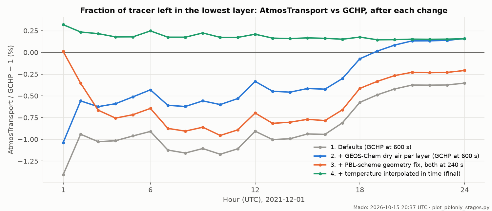
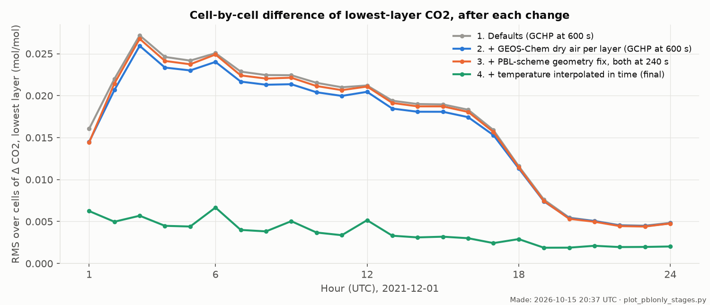
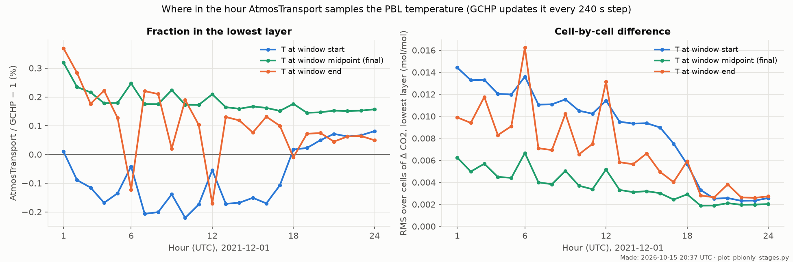
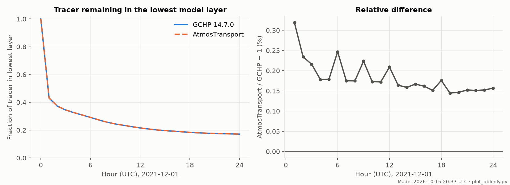
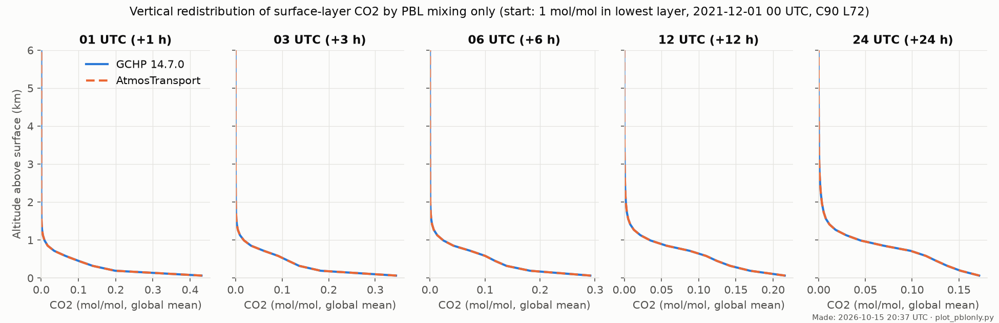
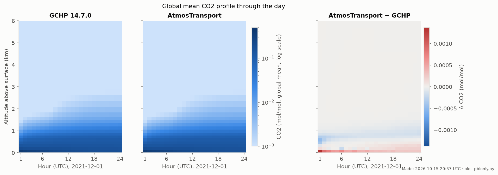
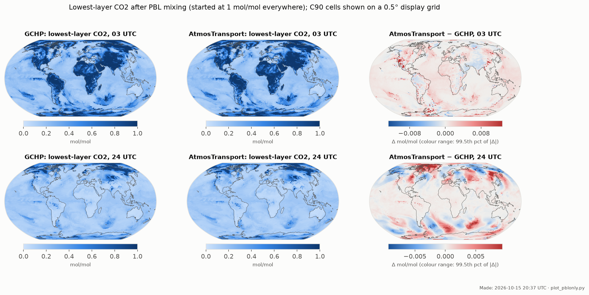
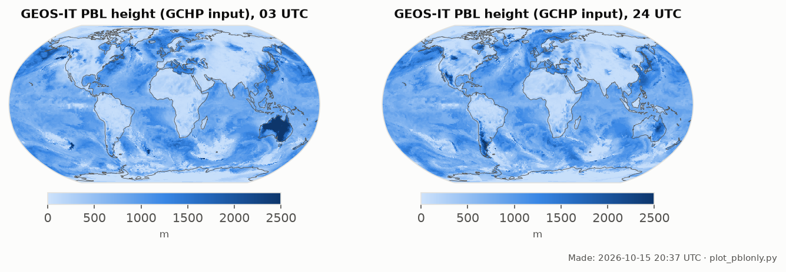

Boundary-layer mixing only: matching AtmosTransport to GCHP, step by step
The experiment and why we do it
- Question: given identical meteorology, grid and initial tracer, do AtmosTransport and GCHP mix a surface tracer up through the boundary layer at the same rate? If not, which modelling choices cause the difference? This is the first of a series that compares one transport process at a time, so that each difference can be traced to its cause before processes are combined.
- What is on and off: only boundary-layer (PBL) mixing, GEOS-Chem's non-local scheme in both models. Advection, convection, chemistry, emissions and deposition are off in both, so nothing else moves the tracer.
- Initial condition and period: a CO2 tracer of 1 mol/mol (dry) in the lowest model layer and 0 above, everywhere on the globe, at 2021-12-01 00 UTC; 24 hours, output every hour.
- Meteorology and grid: GEOS-IT; GCHP reads the C180 files and regrids to C90 itself, AtmosTransport reads a C90 binary preprocessed from the same C180 files; both on the native 72 levels.
- What agreement looks like: the same fraction of tracer left in the lowest layer at every hour (global mass-weighted), and lowest-layer maps that differ only at the level of numerical noise. A systematic offset in the fraction means one model mixes faster; a large cell-by-cell difference means the models see different inputs or make different local choices.
The reference: GCHP 14.7.0
A standard GCHP 14.7.0 run directory (created with createRunDir.sh, TransportTracers simulation with a CO2 tracer added). Changed from
its defaults, for the experiment only:
geoschem_config.yml: onlypbl_mixingis active (use_non_local_pbl: true); transport, convection, chemistry, dry and wet deposition are switched off; HEMCOEMISSIONS: false.- Time step 600 s → 240 s (
HEARTBEAT_DT,RUN_DT, … = 240; chemistry step 720 s, unused). This is the only change to how GCHP computes the mixing. The reason is on the AtmosTransport side: its PBL mixing runs once per transport substep, and the number of substeps per hour is set by the flow (18–22 per hour on this day, about 3 min each). It cannot step at GCHP's 600 s, so both models were brought to a common 240 s (15 substeps per hour).
How AtmosTransport had to be modified to match GCHP
All changes are on AtmosTransport's side, in the order they were found. Changes 1–4 are code; the new options are off by default, so existing AtmosTransport runs are unchanged.
| # | What AtmosTransport did by default | What GCHP does | What we changed | Effect |
|---|---|---|---|---|
| 1 | GEOS-IT binaries carried no latent heat flux, so GEOS-Chem's non-local PBL scheme could not run on GEOS-IT at all. | Reads EFLUX from the GEOS-IT A1 files. |
Code: pass GEOS-IT EFLUX through to the binary (pbl_eflux). |
Prerequisite; already used in the first comparison. |
| 2 | Dry air per layer: each layer loses its own water vapour, Δp_dry = (1 − q) Δp. |
GEOS-Chem's dry hybrid coordinate: Δp_dry = ΔA + ΔB · p_s,dry; the column's water is removed in
proportion to ΔB. |
New option dry_mass_layers = "geoschem_hybrid" (preprocessing). |
AtmosTransport's lowest layer held 0.65 % less dry air than GCHP's; now equal to 4e-7. |
| 3 | Pinned the global mean dry surface pressure to 98,325 Pa in every window. | No global pin: each window follows the met file's surface pressure. | Setting [mass_fix] enable = false (preprocessing). |
Removes a +0.02 % offset in column dry air. |
| 4 | The PBL scheme rebuilds each column's moist pressures from the dry air mass, assuming the default split of change 2. With the GEOS-Chem split this made the lowest layer 0.65 % too thick inside the scheme. | Uses the met moist pressure edges directly. | Code fix: the scheme reads the binary's dry-air split from its header and rebuilds the moist column
to match (edges A + B p_s with p_s recovered from the dry column). |
Moist geometry inside the scheme now equals GCHP's to rounding. |
| 5 | Adaptive transport substeps, 18–22 per hour (164–200 s). | One step per HEARTBEAT_DT (default 600 s; here 240 s). |
Setting min_steps_per_window = max_steps_per_window = 15 (240 s), with GCHP at 240 s. |
Removes the time-step difference; explained the first-hour gap. |
| 6 | The scheme's temperature (3-hourly GEOS-IT I3 file, records at 00, 03, … UTC) was held at the record at the start of each 3-hour block, so it was up to 3 h old. | Interpolates the I3 temperature linearly in time at every step (ExtData TMPU1/TMPU2; confirmed
from GCHP's own 20-minute temperature output). |
New option vdiff_temperature_time = "window_midpoint": temperature interpolated in time to the middle
of each hourly window. |
The largest single improvement: the cell-by-cell difference fell 3–5×. |
The final AtmosTransport preprocessing settings that differ from the default GEOS-IT C90 profile:
[source] dry_mass_layers = "geoschem_hybrid" # change 2 (default "level_humidity") vdiff_temperature_time = "window_midpoint" # change 6 (default "block_start") [numerics] min_steps_per_window = 15 # change 5: 240 s steps (default adaptive, 1..512) max_steps_per_window = 15 [mass_fix] enable = false # change 3 (default: pin to 98,325 Pa)
The AtmosTransport run configuration itself is the same in all stages: advection "none",
diffusion "geoschem_nonlocal_vdiff", convection "none", Float64 on GPU. Already the same in
both models before any change: all 72 native levels, hourly surface pressure and humidity from the CTM_I1 files, the
hourly PBL inputs (PBL height, friction velocity, heat fluxes), and the 3-hourly winds held over each 3-hour block.
The changes are on the local AtmosTransport branch feature/gchp-like (commits dcd5bbb1, 944e4824,
64efeba6) and are not yet on GitHub.
Results: how the difference shrank with each change


Why the middle of the hour

Final comparison (all changes)





Numbers: stages_table.csv (all stages and hours), summary_table.csv (final run).
What is left, and what was ruled out
- Remaining: AtmosTransport keeps 0.15–0.3 % more tracer in the lowest layer than GCHP. About half of it is probably the per-step temperature update above. The rest, about 0.1 %, is near the noise and would point to small differences in the two implementations of the scheme (Richardson-number closure, choice of the PBL-top level, tridiagonal solver); a single-column comparison would settle it.
- Ruled out:
- timing of the PBL inputs: both use the A1 record stamped HH:30 for HH:00–HH+1:00;
- PBL height regridding C180 → C90 (4e-4);
- wind timing: both hold the 3-hourly A3dyn winds over each block;
- humidity timing (no measurable effect);
- mixing-ratio basis: GCHP solves on moist layer weights and then rescales each column, AtmosTransport on dry air. The rate difference is 0.01 % and of the wrong sign;
- GCHP also mixes humidity and then updates mixing ratios, but its dry layer thickness depends only on the dry surface pressure, so the rescale factor is exactly 1.